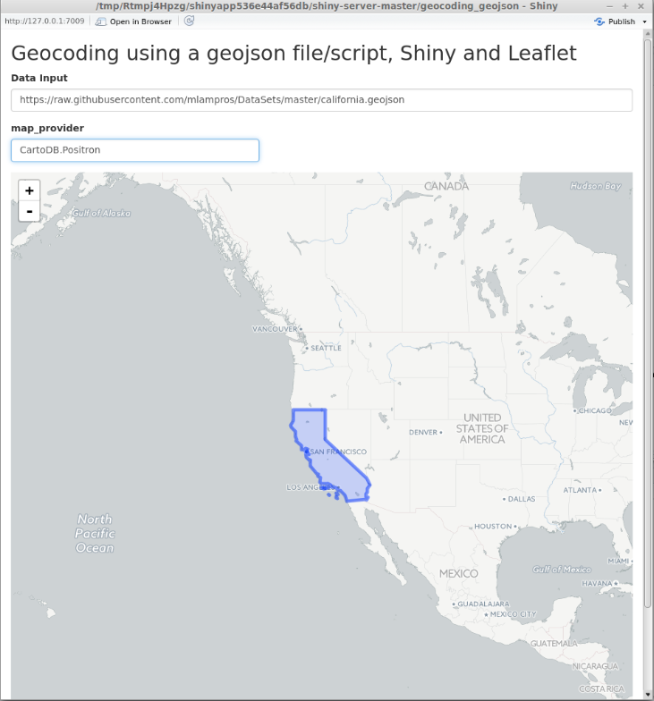
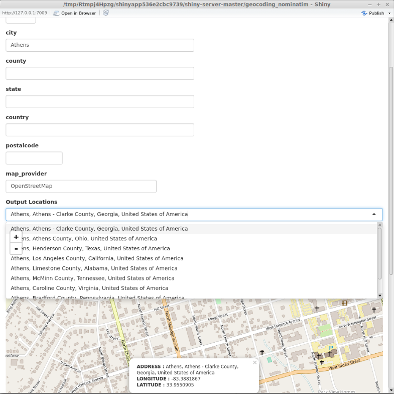
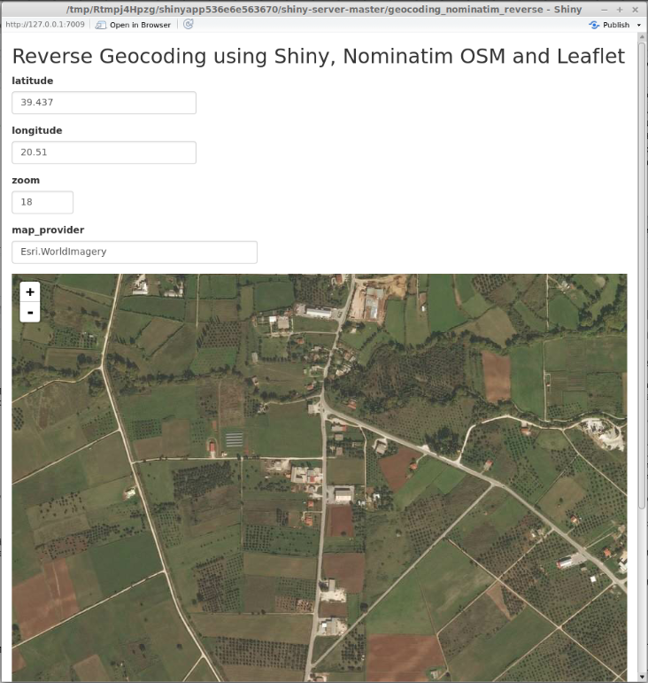

vignettes/the_geojsonR_package.Rmd
the_geojsonR_package.Rmd“GeoJSON is an open standard format designed for representing simple geographical features, along with their non-spatial attributes, based on JavaScript Object Notation. The features include points (therefore addresses and locations), line strings (therefore streets, highways and boundaries), polygons (countries, provinces, tracts of land), and multi-part collections of these types. GeoJSON features need not represent entities of the physical world only; mobile routing and navigation apps, for example, might describe their service coverage using GeoJSON. The GeoJSON format differs from other GIS standards in that it was written and is maintained not by a formal standards organization, but by an Internet working group of developers.”
geojsonR relies mainly on RFC 7946, which is the new standard specification of the GeoJSON format. Moreover, the package takes advantage of a C++11 JSON library (json11) to do the encoding from and to geojson data objects and all functions are exported in R using the Rcpp and RcppArmadillo packages.
The following lines show an example GeoJson object (“feature_collection.geojson”),
{
"type": "FeatureCollection",
"features": [{
"type": "Feature",
"geometry": {
"type": "Point",
"coordinates":
[102.0, 0.5]
},
"properties": {
"prop0": "value0"
}
}, {
"type": "Feature",
"geometry": {
"type": "LineString",
"coordinates": [
[102.0, 0.0],
[103.0, 1.0],
[104.0, 0.0],
[102.0, 0.0]
]
},
"properties": {
"prop0": "value0",
"prop1": 0.0
}
}
]
}
The purpose of this package was not only the implementation of functions to convert from and to geojson objects, but also the development of web applications based on geojson objects / data, which I’ll explain later in the Vignette.
The FROM_GeoJson function can take as input a path to a file, a valid url (beginning from http..) or a GeoJson object in form of a character string. The output is a named list and the resulted coordinates member is a matrix, as the following code chunks illustrate,
# assuming that the data is saved in the previously mentioned "feature_collection.geojson"
library(geojsonR)
# INPUT IS A PATH TO A FILE
file_js = FROM_GeoJson(url_file_string = "feature_collection.geojson")
file_js# output :
$features
$features[[1]]
$features[[1]]$geometry
$features[[1]]$geometry$type
[1] "Point"
$features[[1]]$geometry$coordinates
[,1] [,2]
[1,] 102 0.5
$features[[1]]$properties
$features[[1]]$properties$prop0
[1] "value0"
$features[[1]]$type
[1] "Feature"
$features[[2]]
$features[[2]]$geometry
$features[[2]]$geometry$type
[1] "LineString"
$features[[2]]$geometry$coordinates
[,1] [,2]
[1,] 102 0
[2,] 103 1
[3,] 104 0
[4,] 102 0
$features[[2]]$properties
$features[[2]]$properties$prop0
[1] "value0"
$features[[2]]$properties$prop1
[1] 0
$features[[2]]$type
[1] "Feature"
$type
[1] "FeatureCollection"
# INPUT IS A GeoJson OBJECT (character string)
str_js = '{ "type": "MultiPolygon",
"coordinates": [
[[[102.0, 2.0], [103.0, 2.0], [103.0, 3.0], [102.0, 3.0], [102.0, 2.0]]],
[[[100.0, 0.0], [101.0, 0.0], [101.0, 1.0], [100.0, 1.0], [100.0, 0.0]],
[[100.2, 0.2], [100.8, 0.2], [100.8, 0.8], [100.2, 0.8], [100.2, 0.2]]]
]
}'
char_js = FROM_GeoJson(url_file_string = str_js)
char_js$type
[1] "MultiPolygon"
$coordinates
$coordinates[[1]]
[,1] [,2]
[1,] 102 2
[2,] 103 2
[3,] 103 3
[4,] 102 3
[5,] 102 2
$coordinates[[2]]
$coordinates[[2]][[1]]
[,1] [,2]
[1,] 100 0
[2,] 101 0
[3,] 101 1
[4,] 100 1
[5,] 100 0
$coordinates[[2]][[2]]
[,1] [,2]
[1,] 100.2 0.2
[2,] 100.8 0.2
[3,] 100.8 0.8
[4,] 100.2 0.8
[5,] 100.2 0.2# INPUT IS A URL (beginning from http..)
url_path = "https://raw.githubusercontent.com/mlampros/DataSets/master/california.geojson"
url_js = FROM_GeoJson(url_file_string = url_path)
str(url_js)
Warning message:
closing unused connection 3 (https://raw.githubusercontent.com/mlampros/DataSets/master/california.geojson) List of 4
$ geometry :List of 2
..$ type : chr "MultiPolygon"
..$ coordinates:List of 11
.. ..$ : num [1:56, 1:2] -120 -120 -120 -120 -120 ...
.. ..$ : num [1:64, 1:2] -120 -120 -120 -120 -120 ...
.. ..$ : num [1:36, 1:2] -120 -120 -120 -120 -120 ...
.. ..$ : num [1:24, 1:2] -120 -120 -120 -120 -119 ...
.. ..$ : num [1:16, 1:2] -119 -119 -119 -119 -119 ...
.. ..$ : num [1:42, 1:2] -119 -119 -119 -119 -119 ...
.. ..$ : num [1:48, 1:2] -119 -118 -118 -118 -118 ...
.. ..$ : num [1:11, 1:2] -122 -122 -122 -122 -122 ...
.. ..$ : num [1:11, 1:2] -123 -123 -123 -123 -123 ...
.. ..$ : num [1:9, 1:2] -122 -122 -122 -122 -122 ...
.. ..$ : num [1:1154, 1:2] -124 -124 -124 -124 -124 ...
$ id : chr "california"
$ properties:List of 11
..$ abbreviation: chr "CA"
..$ area : num 423968
..$ capital : chr "Sacramento"
..$ city : chr "Los Angeles"
..$ group : chr "US States"
..$ houseseats : num 53
..$ landarea : num 403466
..$ name : chr "California"
..$ population : num 38332521
..$ statehood : chr "1850-09-09"
..$ waterarea : num 20502
$ type : chr "Feature"The TO_GeoJson function is an R6 class, which takes as input a vector (in case of a Point) or a list (in case of the rest geometry objects) and converts it to a GeoJson object (named list). The output can also include the data in form of a geojson character string if the argument stringify is TRUE. The following code chunk shows the output for a polygon with interior rings,
init = TO_GeoJson$new()
polygon_WITH_dat = list(list(c(100, 1.01), c(200, 2.01), c(100, 1.0), c(100, 1.01)),
list(c(50, 0.5), c(50, 0.8), c(50, 0.9), c(50, 0.5)))
polygon_with = init$Polygon(polygon_WITH_dat, stringify = TRUE)
str(polygon_with)List of 3
$ json_dump : chr "{\"coordinates\": [[[100, 1.01], [200, 2.0099999999999998], [100, 1], [100, 1.01]], [[50, 0.5], [50, 0.80000000000000004], [50,"| __truncated__
$ type : chr "Polygon"
$ coordinates:List of 2
..$ :List of 4
.. ..$ : num [1:2] 100 1.01
.. ..$ : num [1:2] 200 2.01
.. ..$ : num [1:2] 100 1
.. ..$ : num [1:2] 100 1.01
..$ :List of 4
.. ..$ : num [1:2] 50 0.5
.. ..$ : num [1:2] 50 0.8
.. ..$ : num [1:2] 50 0.9
.. ..$ : num [1:2] 50 0.5# if "stringify = TRUE"
cat(polygon_with$json_dump)
{"coordinates": [[[100, 1.01], [200, 2.0099999999999998], [100, 1], [100, 1.01]], [[50, 0.5], [50, 0.80000000000000004], [50, 0.90000000000000002], [50, 0.5]]], "type": "Polygon"}The package documentation includes examples on how to build geojson objects for all geometries ( Point, MultiPoint, LineString, MultiLineString, Polygon (with or without interior rings), MultiPolygon, GeometryCollection, Feature and FeatureCollection ).
The Dump_From_GeoJson function returns a GeoJson character string (GeoJson-dump) for a file or url. The following code excerpt shows the output for the previously mentioned feature_collection.geojson file,
dump_js = Dump_From_GeoJson(url_file = "feature_collection.geojson")
cat(dump_js){"features": [{"geometry": {"coordinates": [102, 0.5], "type": "Point"}, "properties": {"prop0": "value0"}, "type": "Feature"}, {"geometry": {"coordinates": [[102, 0], [103, 1], [104, 0], [105, 1]], "type": "LineString"}, "properties": {"prop0": "value0", "prop1": 0}, "type": "Feature"}], "type": "FeatureCollection"}The same applies to url files beginning from http...
The aim of the Features_2Collection function is to take a vector of valid path’s / url’s of Feature object files as input and to return a Feature Collection. For instance, if I have the following two files (“Feature1.geojson”, “Feature2.geojson”),
# "Feature1.geojson"
{
"type": "Feature",
"id": 1,
"bbox": [-10.0, -10.0, 10.0, 10.0],
"geometry": {
"type": "Polygon",
"coordinates": [
[
[-10.0, -10.0], [10.0, -10.0], [10.0, 10.0], [-10.0, -10.0]
]
]
},
"properties": {
"prop_1": "addr1",
"prop_2": 1
}
}# "Feature2.geojson"
{
"type": "Feature",
"id": 2,
"bbox": [-10.0, -10.0, 10.0, 10.0],
"geometry": {
"type": "Polygon",
"coordinates": [
[
[-10.0, -10.0], [10.0, -10.0], [10.0, 10.0], [-10.0, -10.0]
]
]
},
"properties": {
"prop_1": "addr2",
"prop_2": 2
}
}then the output of the function will be a Feature Collection dump,
vec_in = c("Feature1.geojson", "Feature2.geojson")
res_fcol = Features_2Collection(vec_in, bbox_vec = NULL)
cat(res_fcol){"bbox": [], "features": [{"bbox": [-10, -10, 10, 10], "geometry": {"coordinates": [[[-10, -10], [10, -10], [10, 10], [-10, -10]]], "type": "Polygon"}, "id": 1, "properties": {"prop_1": "addr1", "prop_2": 1}, "type": "Feature"}, {"bbox": [-10, -10, 10, 10], "geometry": {"coordinates": [[[-10, -10], [10, -10], [10, 10], [-10, -10]]], "type": "Polygon"}, "id": 2, "properties": {"prop_1": "addr2", "prop_2": 2}, "type": "Feature"}], "type": "FeatureCollection"}A secondary thought about the geojsonR package was to make some of its functions available for applications. I’ve built some simple geocoding applications taking advantage of shiny, leaflet and Nominatim. The source code of those applications can be found in my Github repository. To open the applications one should either use from inside an R session,
or follow the web-links using the shinyapps.io service,
The latter service is limited to 25 active hours per month (for free accounts), thus if the limit is exceeded then the applications won’t be available to the end users.
I won’t go into detail about shiny and leaflet, because both packages are well documented and users can find information on how to include them in their projects. On the other hand, “Nominatim is a tool to search OpenStreetMap (OSM) data by name and address and to generate synthetic addresses of OSM points (reverse geocoding). It can be found at nominatim.openstreetmap.org. Nominatim is also used as one of the sources for the search box on the OpenStreetMap home page. Several companies provide hosted instances of Nominatim that you can query via an API.” More information on how to use Nominatim can be found at https://wiki.openstreetmap.org/wiki/Nominatim).
The first application geocoding_geojson takes a valid GeoJson file, url (beginning from http..) or a valid json character string as input (Data Input field) and a map_provider (defaults to OpenStreetMap) and returns a leaflet map. If the map_provider is other than OpenStreetMap, then the input parameter should match one of the names(leaflet::providers). More information about the leaflet:providers can be found in the following links: https://rstudio.github.io/leaflet/basemaps.html, https://github.com/leaflet-extras/leaflet-providers and http://leaflet-extras.github.io/leaflet-providers/preview/index.html. The following image shows the output for the california.geojson file using the CartoDB.Positron as map_provider,

The second application geocoding_nominatim takes a valid address (using either a streetname, a housenumber, a city, a county, a state, a country, a postalcode and/or a map_provider) and returns all possible locations. The user then can choose one of the resulted locations from the Output Locations drop-down menu (if there are more than one) and the output will be a leaflet map with information about the address, longitude and latitude. This type of geocoding is called forward geocoding (or address geocoding) and is the process of finding an associated latitude and longitude for a given address. The next image shows the results in case that the input to the city field is Athens,

The user can be more specific about the location taking advantage of all or more than one fields. In case that there is no match, the following warning will be returned : “the nominatim query returns an empty array. Please, modify the initial query”.
The last application geocoding_nominatim_reverse takes a valid latitude, longitude, zoom (ranges from 0 to 18) and/or a map_provider and returns an address for these coordinates. A leaflet map will be created with information about the associated address or the nearest address point (Reverse geocoding). The following image shows my current location (approximately) using the Esri.WorldImagery as map_provider,

To report any bugs / issues for the shiny-geocoding applications use the following link https://github.com/mlampros/shiny-server/issues.
An updated version of geojsonR can be found in my Github repository and to report bugs/issues for the package use the following link, https://github.com/mlampros/geojsonR/issues.